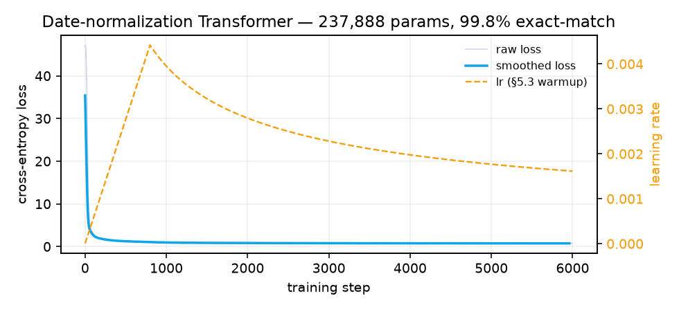

Every module from the §3.1–§3.5 notes, assembled into one runnable encoder-decoder Transformer, trained on a real date-translation task — with the forward pass re-derived in pure NumPy to prove the math
step 01
The Task — Real Sequence-to-Sequence Translation
To exercise the whole architecture — encoder, masked decoder self-attention, and encoder-decoder cross-attention — we need a task where the target is a genuine reordering of the source, not a copy. Date normalization fits perfectly: map free-form human dates to ISO 8601. The model has to reorder day/month/year and rewrite month names as numbers.
| Source (human) | Target (ISO) | What it tests |
|---|---|---|
| 24th Jan 2001 | 2001-01-24 | month name → number, reorder |
| March 3, 1998 | 1998-03-03 | zero-padding a single digit |
| 05/08/2012 | 2012-08-05 | pure positional reordering D/M/Y → Y-M-D |
Data is generated procedurally in five formats — no dataset download. Tokenization is character-level over a shared vocabulary of 69 symbols, so the tied embedding matrix (§3.4) is meaningful: the same $E$ embeds both the English source and the digit target.
step 02
The Assembled Model — Every Block From the Notes
Nothing here calls nn.Transformer or nn.MultiheadAttention. Every layer is built from nn.Linear using the exact code from the earlier sections. This is the full model, condensed:
# §3.2 — the core primitive, verbatim from study3.html
def scaled_dot_product_attention(Q, K, V, mask=None):
d_k = Q.size(-1)
scores = Q @ K.transpose(-2, -1) / math.sqrt(d_k)
if mask is not None:
scores = scores.masked_fill(mask == 0, float('-inf'))
return F.softmax(scores, dim=-1) @ V
class EncoderLayer(nn.Module): # §3.1 — 2 sub-layers
def forward(self, x, src_mask):
x = self.norm1(x + self.dropout(self.self_attn(x, x, x, src_mask)))
x = self.norm2(x + self.dropout(self.ffn(x))) # §3.3 FFN
return x
class DecoderLayer(nn.Module): # §3.1 — 3 sub-layers
def forward(self, y, enc, tgt_mask, src_mask):
y = self.norm1(y + self.dropout(self.self_attn(y, y, y, tgt_mask))) # masked
y = self.norm2(y + self.dropout(self.cross_attn(y, enc, enc, src_mask))) # cross
y = self.norm3(y + self.dropout(self.ffn(y)))
return y
class Transformer(nn.Module):
def _embed(self, ids): # §3.4 scale + §3.5 pos-enc
return self.pos(self.embed(ids) * math.sqrt(self.d_model))
def forward(self, src, tgt, src_mask, tgt_mask):
enc = self.encode(src, src_mask)
dec = self.decode(tgt, enc, tgt_mask, src_mask)
return dec @ self.embed.weight.T # §3.4 tied pre-softmax| Module | Paper § | Blog page | Role in this model |
|---|---|---|---|
| MultiHeadAttention | §3.2 | study3.html | used 5× — enc self, dec self, cross |
| PositionwiseFFN | §3.3 | study4.html | last sub-layer of every block |
| tied embedding + √d | §3.4 | study5.html | input embed & pre-softmax logits |
| PositionalEncoding | §3.5 | study6.html | injects order, 0 learned params |
| EncoderLayer | §3.1 | study1.html | 2 sub-layers, post-norm |
| DecoderLayer | §3.1 | study2.html | 3 sub-layers, causal mask |
| Adam + warmup | §5.3 | this page | Noam schedule, 800-step warmup |
step 03 · idea from §3
Proving the Math — NumPy Mirror & Assertions
Before training, the forward pass is re-implemented in pure NumPy — no autograd, hand-rolled softmax, LayerNorm, and multi-head attention — then run with the same weights as the PyTorch model. If the notes are right, the two must agree. They do, to floating-point precision. Alongside, seven structural claims from the shape-flow tables and the causal-mask section are checked numerically:
# the NumPy multi-head attention — no torch, no autograd
def np_mha(mod, q, k, v, mask=None):
Q, K, V = np_linear(q, Wq), np_linear(k, Wk), np_linear(v, Wv)
Q, K, V = split_heads(Q), split_heads(K), split_heads(V)
scores = Q @ K.transpose(0,1,3,2) / math.sqrt(d_k)
if mask is not None: scores = np.where(mask == 0, -1e9, scores)
out = np_softmax(scores, axis=-1) @ V
return np_linear(merge_heads(out), Wo)
assert np.abs(numpy_encoder - torch_encoder).max() < 1e-4 # -> 9.5e-7step 04 · §5.3
Training — Adam With the Noam Warmup Schedule
Trained for 6,000 steps with Adam ($\beta_1{=}0.9,\ \beta_2{=}0.98,\ \epsilon{=}10^{-9}$) and label smoothing $\epsilon_{ls}{=}0.1$ (§5.4). The learning rate follows the paper's §5.3 schedule — linear warmup for 800 steps, then inverse-square-root decay:

Real run. Blue = cross-entropy loss (47 → <1). Orange dashed = the §5.3 warmup LR, peaking at ~4.4e-3 at step 800 then decaying.
DD/MM/YYYY format. Swapping in the §5.3 warmup schedule — with no other change — took the same model to 99.8%. This is exactly the post-norm instability the §3.1 note warns about: post-norm Transformers need warmup to train well, and here that's not theory, it's the difference between the two runs.
step 05
Results — Before & After
Evaluated on 500 freshly-generated dates the model never saw: 99.8% exact-match (full string correct, including reordering and zero-padding). Greedy decoding, no beam search.
| Source | Prediction | Gold | |
|---|---|---|---|
| 19 October 1960 | 1960-10-19 | 1960-10-19 | ✓ |
| 05/08/2012 | 2012-08-05 | 2012-08-05 | ✓ |
| November 27, 1962 | 1962-11-27 | 1962-11-27 | ✓ |
| 9th Feb 2001 | 2001-02-09 | 2001-02-09 | ✓ |
| 28/03/1976 | 1976-03-28 | 1976-03-28 | ✓ |
| 30/12/2009 | 2009-12-30 | 2009-12-30 | ✓ |
| Nov 21st, 1966 | 1966-11-21 | 1966-11-21 | ✓ |
05/08/2012 → 2012-08-05 is the money shot. There are no month names to lean on — the model must learn purely from position that the source's first field is the day and the last is the year, then emit them in reversed order. That reordering is cross-attention (§3.2.3) doing exactly what the encoder-decoder attention analogy in the paper describes.
step 06
Reproduce It
The whole thing is two files — transformer.py (model + NumPy mirror + the 9 assertions) and train.py (task + training loop + plot). Total training time on CPU: about 3.5 minutes. Full source: github.com/yashvisharma1204/neural.y/work/transformer ↗
python -m venv .venv && source .venv/bin/activate
pip install numpy torch matplotlib
python transformer.py # runs the 9 verification checks
python train.py # trains, prints accuracy, saves loss_curve.png"327 + 45" → "372", carries force long-range attention), sequence reversal over random tokens, or a small synthetic grammar. A real MT dataset (Multi30k, IWSLT) is the most paper-authentic but needs a download, subword tokenization, and far more compute. Dates hit the sweet spot for a self-contained, CPU-trainable, few-minute demo that still lights up every sub-layer.
Encoder → Decoder → Attention → FFN → Embeddings → Positional Encoding → a Transformer that trains. Next up: §4 Why Self-Attention.